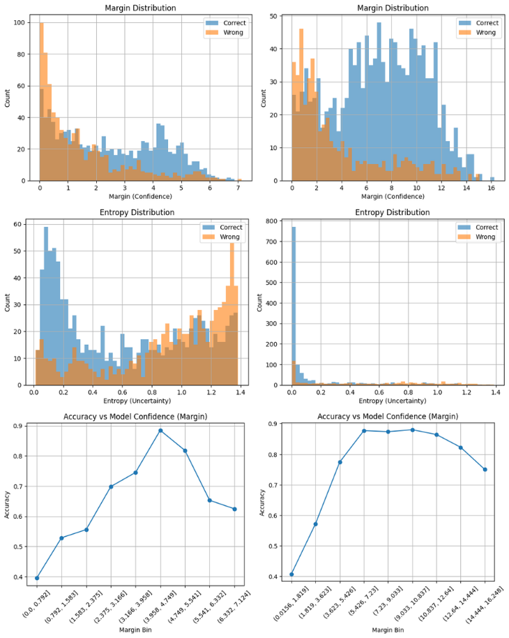

儀表板
李大夫
國考備考中
系統研究目標
本系統旨在建構一套以大型語言模型為核心之中醫藥材知識系統，評估 Supervised Fine Tuning 技術對於專業中醫語境下之實務可行性。 整合了數位化知識庫、動態模擬測驗與自主研發之 BianCang-Qwen2-7B 模型，提供一站式的學習與研究環境。
🌿 中藥百科 & 醫砭
收錄 300 種常用中藥材之多模態資料庫，包含性味、歸經、主治及考據。 整合「醫砭」經典文獻，實現非結構化文獻之結構化重組。
📝 國考模擬 & 驗證
整合民國 94 至 114 年間中醫師國考題庫。 透過模擬測驗（5-50題）檢驗學習成效，並作為 LLM 模型性能評測之基準。
📊 當前學習摘要
🔔 近期紀錄
尚未進行測驗紀錄。
中醫國考模擬測驗
請選擇測驗階段與題數，系統將隨機抽取題目進行模擬。
中醫藥材Chatbot
研究主題：中醫藥材知識系統：語言模型於中醫藥材知識微調訓練與驗證研究
專題學生：張詠翔 官翰 簡祥竹 指導教授：曾明性

(民國94-114年 中醫國考中藥材相關)
BianCang-Qwen2-7B [DEMO版本]
訓練結果說明
BianCang-Qwen2-7B 經 民國94年至114年間中醫師國家考試中藥材相關之1,751題純文字選擇題 為資料集，採 LoRA 微調後的權重結果。
研究摘要
本研究旨在建構一套以大型語言模型為核心之中醫藥材知識系統，評估Supervised Fine Tuning技術對於專業中醫語境下之實務可行性。研究以Biancang-Qwen2.5-7B-Instruct為基礎模型，採取「模型內化知識」策略，避免對外部檢索機制的高度依賴，並以LoRA進行監督式微調。評測資料來源為民國94年至114年間中醫師國家考試中藥材相關之1,751題純文字選擇題，以作答正確率（MCQ accuracy）作為主要評估指標，並納入 Lingdan-13B-Base作為對照模型。實驗流程涵蓋資料集預處理、多版本模型推論結果比較分析，並透過 McNemar’s test 檢驗微調前後作答表現之顯著差異。結果顯示，模型在未引入外部檢索機制下，作答正確率由 58.08% 提升至72.76%，顯示模型於中醫藥材知識理解與作答穩定性上皆獲得明顯改善，證實本研究所提出之模型內化式微調策略於中醫國考任務中展現良好成效。最終，本研究完成一套整合微調模型之中醫藥材知識系統，提供國考題目練習與中醫知識查詢功能，驗證其於實際應用情境中的可行性與穩定性。